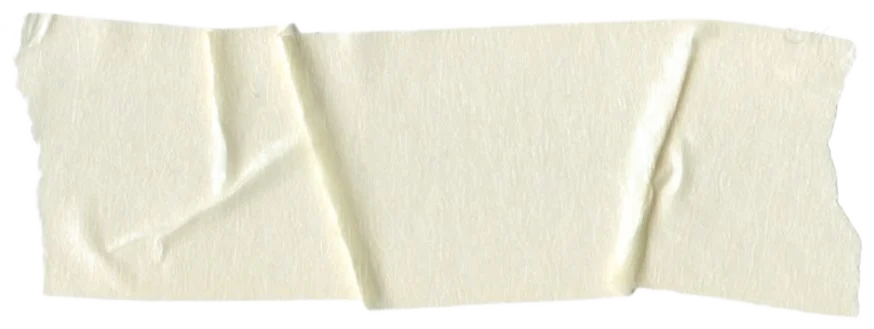
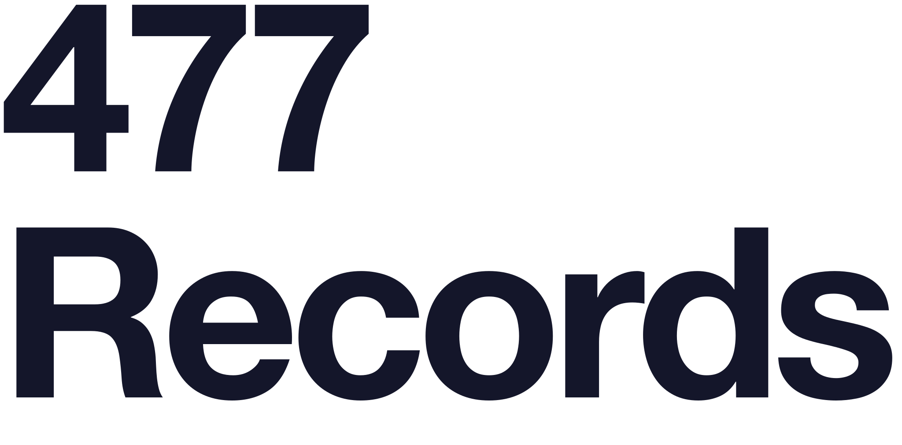
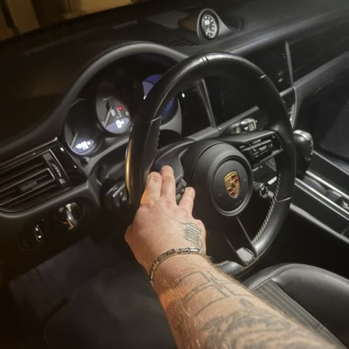

Started by an artist who’s been on both sides of a record deal
Two Feet founded 477 Records in 2024, after releasing platinum and gold records through a major label and on his own.
We sign artists early and work on the music with them, not just the rollout.
Then we handle the release: distribution, marketing and ads, at the scale a major would.
Roster
View the roster


Releases
All 112 releases Two Feet (Part 2)Two FeetOut Dec 25Apple Music
Two Feet (Part 2)Two FeetOut Dec 25Apple Music
I can smell them on your dressTwo FeetOct 2026SpotifyApple MusicYouTube I don't think you love meTwo FeetOct 2026SpotifyApple MusicYouTube
I don't think you love meTwo FeetOct 2026SpotifyApple MusicYouTube P2 OvertureTwo FeetOct 2026SpotifyApple MusicYouTube
P2 OvertureTwo FeetOct 2026SpotifyApple MusicYouTube tuesdaynight.BrothelSep 2026SpotifyApple MusicYouTube
tuesdaynight.BrothelSep 2026SpotifyApple MusicYouTube On The BlockWNTRBRKSep 2026SpotifyApple MusicYouTube
On The BlockWNTRBRKSep 2026SpotifyApple MusicYouTube- Illusion (feat. Michele Morrone)JONYSep 2026SpotifyApple MusicYouTube
 Two Feet (Part 1)Two FeetSep 2026SpotifyApple MusicYouTube
Two Feet (Part 1)Two FeetSep 2026SpotifyApple MusicYouTube
Reach out for information
gd@477records.com